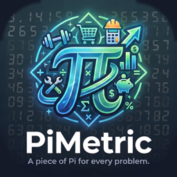

The job-site calculator for feet, inches and everyday math · Calculadora de obra
Email PiMetric@outlook.com. We usually answer within two business days. English or Spanish is fine.
Sign in with the same Apple ID and open PiMetric. Pro usually unlocks by itself. If it doesn't, go to Settings → PiMetric Pro → Restore Purchases. You never pay twice.
In PiMetric, go to Settings → PiMetric Pro → Redeem a Code (iOS 16.3 or later), or open the link that came with your code. Apple checks the code; Pro unlocks right away.
No. PiMetric Pro is a one-time purchase. There is nothing to cancel.
Your calculations, jobs, material lists, formulas and photos are stored only on your iPhone. Deleting the app deletes them, unless you restore your iPhone from an iCloud or computer backup. iCloud sync is planned for a future update.
Turn on the laser's Bluetooth, then in PiMetric go to Settings → Bluetooth Laser → Connect. Leica DISTO and Bosch GLM/PLR “C” models are supported (Pro).
Yes. It follows your iPhone's language, or pick Español in Settings → Language. Say It understands spoken Spanish too.
PiMetric's results are estimates to help you plan. Always confirm against your local building codes, a qualified professional, or official aviation sources. Health tools are not medical advice.
Purchases are handled by Apple. To ask for a refund, visit reportaproblem.apple.com.